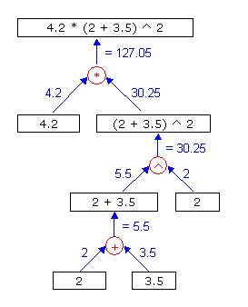

2. Recursive parsing
Ok, so how to analyse an expression? First of all you have to distinct between operators (like +, -, *, /, ^ and parentheses) and values. In the expressions below all operators are colored red, all values blue and the parentheses green:"2 * 3 * 4"
"2 * (3 * 4)"
"4.2 * (2 * 3.5) ^ 2"
You have to unravel the expression by taking in account the mathematical rules. In order to calculate for example "4.2 * (2 + 3.5) ^ 2" you get a recursive tree stucture as presented in figure 1.

Figure 1: Recursive tree for calculating
the expression "4.2 * (2 + 3.5) ^ 2"
Figure 1: Recursive tree for calculating
the expression "4.2 * (2 + 3.5) ^ 2"
In order to write a program routine that can evaluate an expression we will make an function called eval, that will be used recursively. The input for this function is a string that contains the expression. The output will be a double value containing the answer of the expression.
SUB Eval(expression:STRING), DOUBLE DEF ans:DOUBLE ' ... code here ... RETURN ans ENDSUB
Copyright © 2006 SpeQ Mathematics